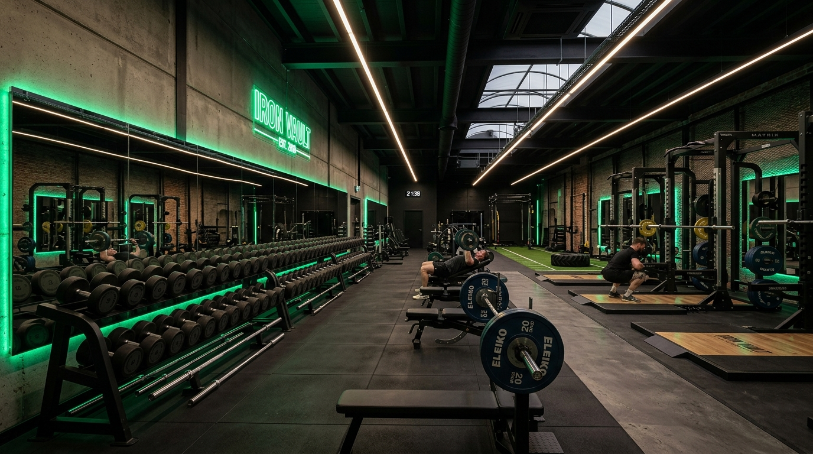
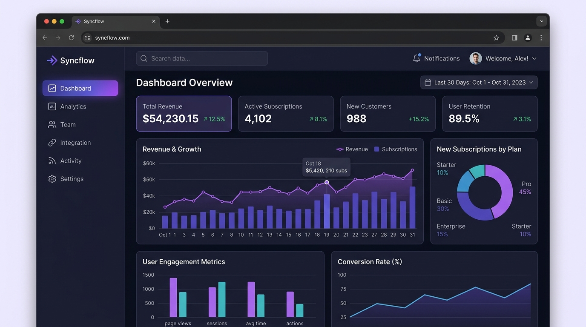

Portfolio
Each project below solved a different business problem. I focus on clarity, speed, and visual identity that matches the audience.
A coffee shop landing page built around a warm, editorial design language. The brief was simple: make someone feel the smell of fresh coffee through a screen. The entire aesthetic — the floating beans, the circular hero cup, the amber palette — was reverse-engineered from that one sentence.
The challenge here was completely opposite to the café site — instead of warmth, the brief was power, discipline, and edge. The dark cinematic aesthetic with electric green accents was designed to feel like walking into a serious gym at 5AM, not a lifestyle brand.


The most technically complex of the three. SaaS clients are skeptical by nature — they've seen too many generic landing pages. This site needed to feel credible, precise, and modern. The dashboard mockup is entirely hand-built in HTML and CSS, not a screenshot.